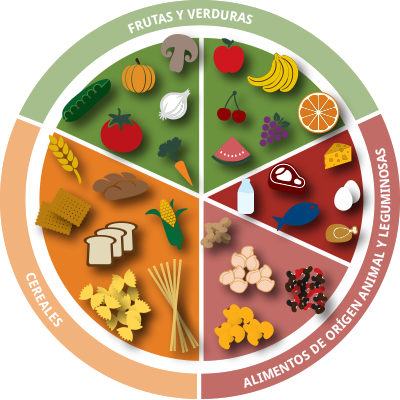

Plato del buen comer
El saber como combinar bien nuestros alimentos, equilibrarlos y saber que nutrientes puede ser util para una buena alimentacion saludable
| Frutas y Verduras | Cereales y Tuberculos | Leguminosas |
|---|---|---|
| Las Frutas y Verduras aportan vitaminas, fibra antioxidantes, agua y fitonutrientes, son las que mas nutrientes dan | Te dan carbohidratos, fibra, vitaminas, son bastante importante para tener energias | Son fuentes importantes de proteinas, las leguminosas tambien aportan fibra, carbohidratos y vitaminas, de manera equilibrada pueden ser bastante buenos en hierro y zinc |